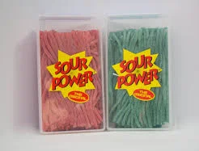

20 Healthier Salty Snacks You Need To Try These salty snacks are healthy enough that you don’t have to feel guilty about snacking! by Erin Elizabeth October 6, 2022, 12:09 pm 7.5kViews Tweet Share Share Pin The parameters of a healthy diet have changed so many times throughout modern history that it’s hard to know what’s healthy and what’s not. But regardless of your diet, everyone craves salty snacks sometimes.
Source: https://restaurantclicks.com/healthy-salty-snacks/